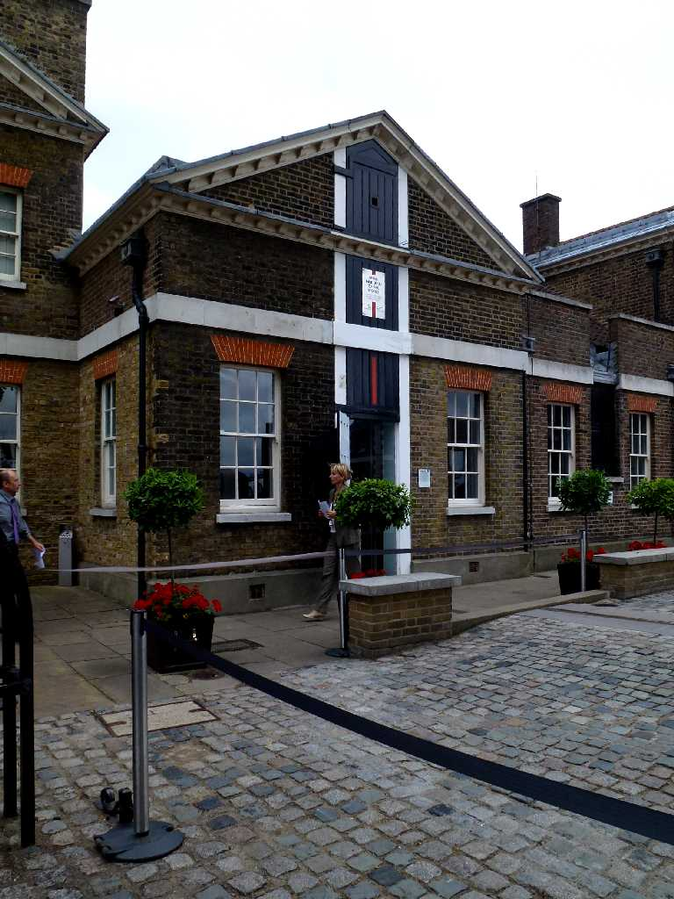
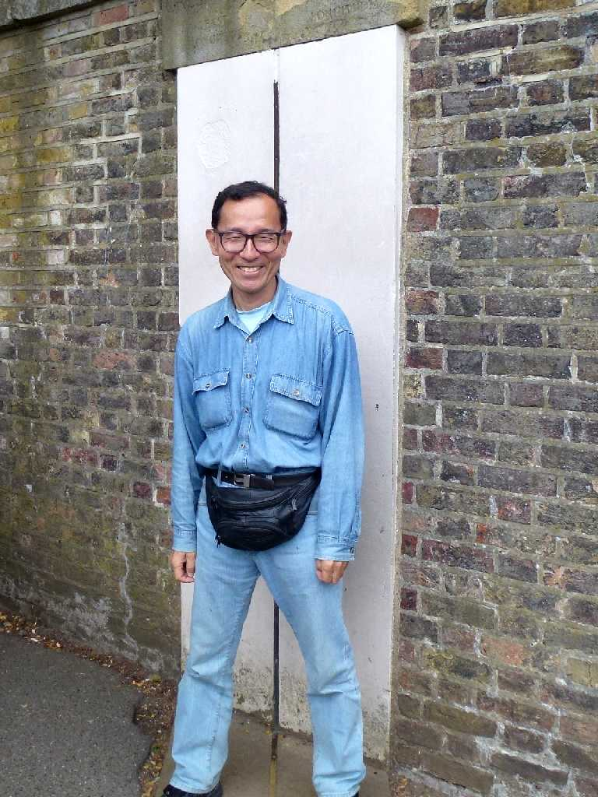
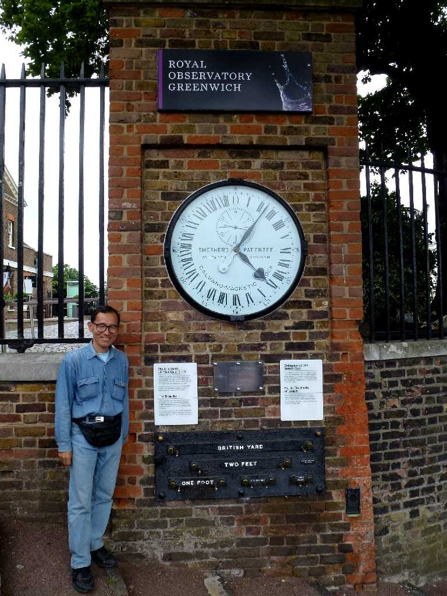

Prime Meridian Line Royal Observatory Greenwich
８０日間世界一周鉄道の旅で５３日目 １６７５年設立された王立のグリニッジ天文台にある本初子午線経度０度

August 15 2013 Zero degrees longitude Prime Meridian Line Greenwich
本初子午線経度０度に立つ

August 15 2013 10:07(summer time) Greenwich Mean Time 9:07
世界標準時(GMT)の２４時間時計 近年科学技術が高度化し南中時刻が重力の歪みや大陸のプレート移動などで動くため閏秒で協定世界時(UTC)を修正している

 AI解説
AI解説